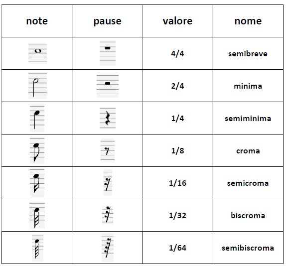

I valori e le Pause
Cosa sono pause, battute e legature.
I suoni che compongono una melodia hanno durate variabili e subiscono spesso interruzioni da pause. La durata di questi suoni e di questi silenzi è stabilita e rappresenta con precisione particolari simboli grafici di forma diversa chiamati figure musicali (o valori) e figure di silenzio (o pause).
Le figure musicali
Le figure musicali sono quindi dei segni grafici che rappresentano esattamente quanto un dato suono deve durare.
Le pause invece sono segni grafici che rappresentano esattamente la durata di silenzio, cioè l’interruzione del suono.
Da sottolineare poi il preciso rapporto numerico esistente fra i valori e pause musicali: ogni figura e ogni pausa valgono infatti la metà della figura o pausa precedente.
La misura e le stanghette
Per facilitare la lettura ritmica ogni brano musicale viene diviso in tante parti di eguale durata chiamate misure o battute. La misura o la battuta è lo spazio esistente fra due stanghette verticali attraversanti il pentagramma. Essa contiene un determinato numero di valori, note o pause, la somma dei quali è stabilita dal tempo segnato all’inizio del pentagramma.
La stanghetta che suddivide le misure è costituita da una linea semplice; ma viene usata doppia al termine di una parte importante di una composizione musicale e ancora doppia, ma formata da una linea sottile e da una in grassetto per la chiusura della composizione, chiamata stanghetta finale.
I segni di prolungazione del suono
Per aumentare il valore delle note oltre la durata della figura ci si serve ad esempio della legatura di valore, punto di valore.
La legatura di valore è una linea curva che unisce due o più note dello stesso nome e della stessa intonazione (altezza); il suono si prolunga, oltre il valore della prima nota, anche per il valore delle note legate.
Il punto di valore viene sempre posto a destra della nota e aumenta la stessa di metà del suo valore; produce lo stesso effetto se posto affianco di una pausa.